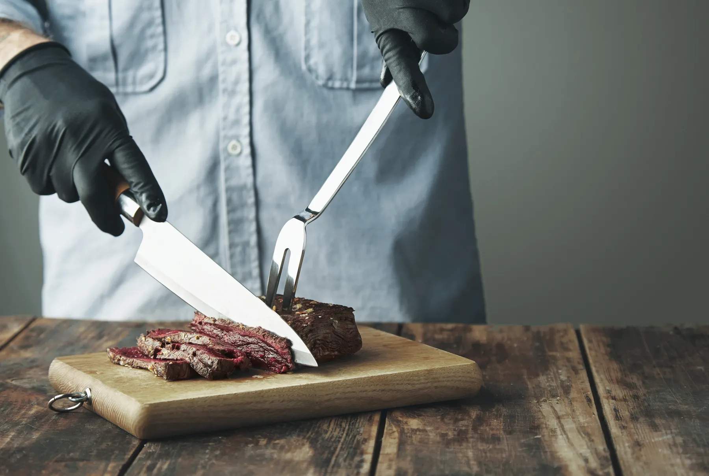
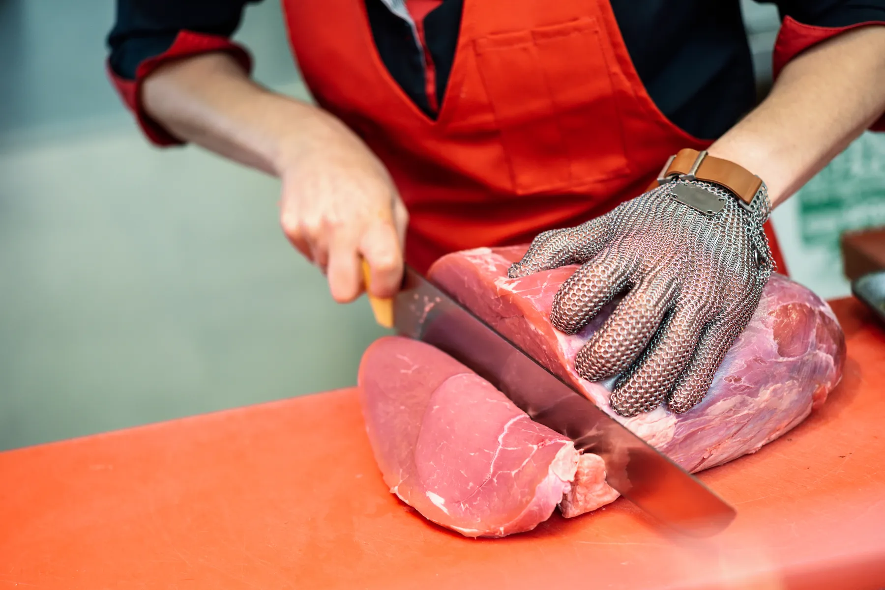
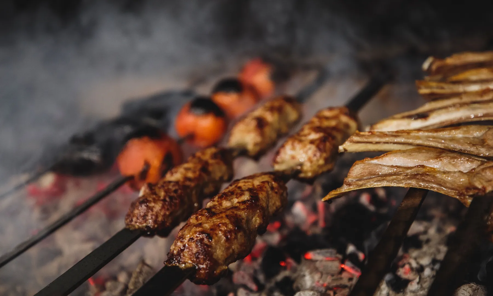

Per otto
Per ottoLa Braciata
Arrosticini, salsicce e spiedini per una griglia da otto persone. Arriva pronta da mettere sul fuoco.
da 48€Vedi la box →

Arrosticini filati stamattina, carne che scegliamo noi. Da tre generazioni, stessa bottega.
Li ricevi a casa freschi in tutta Italia, oppure prenoti e ritiri al banco per l'ora che dici.
 Peso fisso · spedibile
Peso fisso · spedibile
Arrosticini e box a peso fisso, dal banco al corriere refrigerato. Filiamo la mattina, partono lo stesso giorno.
Vedi cosa spediamo → Al banco · prenota e ritira
Al banco · prenota e ritira
Scegli i tagli, te li prepariamo per l'ora che dici. Li pesiamo davanti a te e paghi al banco, sul peso reale.
Prenota il tuo taglio →Solo carne di pecora, tagliata e infilata a mano, uno per uno. Niente glutine, niente conservanti. Li ricevi freschi, o li blocchi in freezer lo stesso giorno: il sapore resta quello del banco.
Per ottoArrosticini, salsicce e spiedini per una griglia da otto persone. Arriva pronta da mettere sul fuoco.
 Se non ci conosci
Se non ci conosciUn giro del banco in una scatola: un taglio da arrosto, macinato, arrosticini e una conserva di casa.
 Col timbro
Col timbroLa dispensa dell'Abruzzo: conserve, sottoli e un pensiero di carne, chiusi col nostro timbro e la spunta a mano.

Dal banco di famiglia"Ha cominciato mio nonno, con un banco e una bilancia. Taglio ancora con le sue regole: si conosce chi alleva, si compra l'animale intero, non si butta niente."
Compriamo da allevatori che sappiamo nominare. La carne ha una provenienza, non un codice a barre.
Prendiamo l'animale tutto e lo lavoriamo noi al banco. Per questo il taglio giusto lo trovi sempre.
Quello che non va al banco diventa preparato, macinato, arrosticino. È così che si tiene il prezzo onesto.

Filiamo e prepariamo la mattina, e lo stesso giorno partono col corriere refrigerato. Imballo isotermico e ghiaccio, così arrivano al fresco.